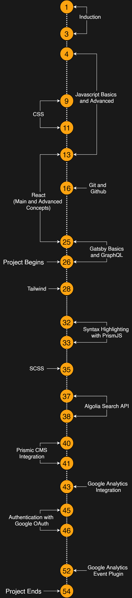
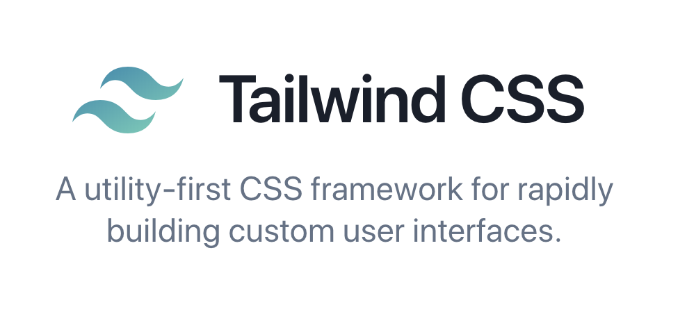

Sprinklr Internship 2020
(04-May to 26-June)
Author: Ajay Bhardwaj
The Timeline

Main Project
Sprinklr Blogs
What does it do?
- A user can write a blog in either Markdown Format or an Online Editor.
- The blog will then be published online.
- The website will classify the blog into different categories (like Webpack, Machine Learning, Most Recent, Most Popular, etc.)
Working
All Features
- Lightweight website (extremely fast to load)
- Responsive UI
- Lazy Loading Images
- Write Blogs with Markdown
- Write Blogs with Featured Rich Editor
- Create, Read, Update and Delete Blogs
- Quick Navigation within Website
- Share Blogs on Facebook, Twitter and LinkedIn
- Syntax Highlighting for Code Snippets
- Search for content in Blogs
- Most Popular and Most Read
- Completely Serverless
Tools and Technologies used



Challenges in Project
- Mobile Compatible UI
- Setting up and Configuring Gatsby and Plugins
- GraphQL queries
- Carousel
- Setting up code syntax highlighting
- Integrating Algolia Search
- Integrating Prismic
- Google Analytics
Live Demo
Scope and Future of Project
- Upvotes on Blogs like Quora or Claps like Medium
- Rewarding Strategies for authors
- Comments
- Gatsby Cloud with increment builds
- Improved UI for tablet devices
- Sprinklr CMS
- Bookmarks and History using Authentication
- Improved Google Analytics
- Other UI Enhancements like Page loading Transitions
The Team
- Ajay Bhardwaj (Product Engineering Intern)
Mentors
- Chinmay Chaudhary (Reporting Manager)
- Het Patel (Product Engineer)